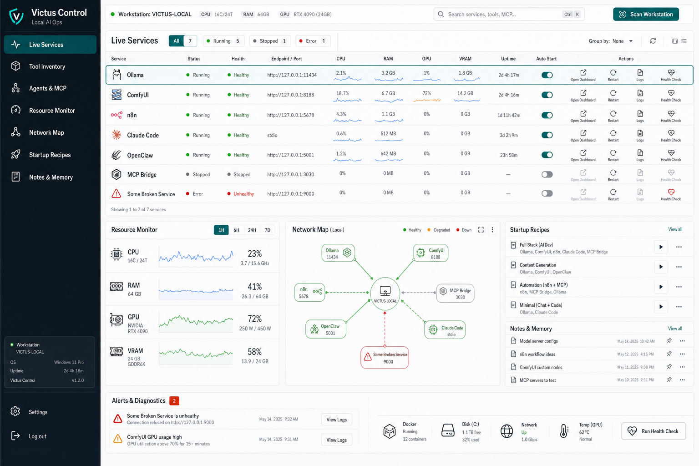

LOCAL-FIRST · OPERATIONS · REACT/TS
Victus Control
Una piattaforma operations local-first per capire, strutturare e gestire una workstation AI: scoperta del runtime live, inventario, monitoraggio delle risorse, security review e una intent-map che confronta la configurazione desiderata con la realtà.
RISULTATO
Mostra a colpo d'occhio la differenza tra la configurazione voluta e quella live — senza dipendere dal cloud.

01 IL PROBLEMA
Una workstation AI locale diventa presto un groviglio: modelli, automazioni, dashboard e tool sparsi tra processi e porte. Cosa gira davvero, cosa dovrebbe girare, e dove la realtà si discosta dalle tue intenzioni?
02 COSA FA
- Scoperta del runtime live
- Scansiona servizi e tool in esecuzione e mostra stato, health e costo in risorse per ogni tool di AI locale — invece di terminali sparsi e congetture.
- Intent Map — voluto vs. osservato
- Disegna come dovrebbe essere la tua workstation e lascia che Victus lo confronti con ciò che gira live: OK, mancante, esposto o inatteso. Quella differenza è il cuore del progetto.
- Monitor delle risorse
- CPU, RAM, GPU e VRAM a colpo d'occhio, così vedi subito dove sta la pressione durante il lavoro AI pesante.
- Inventario persistente
- Ricorda i tool noti con note ed etichette di stato, anche quando non sono in esecuzione — un catalogo vivo invece di un cimitero.
- Security review
- I listener sconosciuti finiscono in un flusso di review invece di restare aperti in silenzio; decidi tu cosa è attendibile.
- Diagnostica agenti & MCP
- Visibilità su agenti e server MCP collegati, sopra un'architettura React/TypeScript testabile con stato in SQLite.
03 COSA HO IMPARATO
La domanda interessante non era ‘un'altra dashboard’, ma: lascia che l'utente definisca la configurazione voluta e confrontala con la realtà live. Quella differenza — desired vs. observed — è dove sta la vera intuizione.
INTERESSATO?
Facciamo due chiacchiere.
Dimmi cosa ne pensi — o cosa vorresti farci.